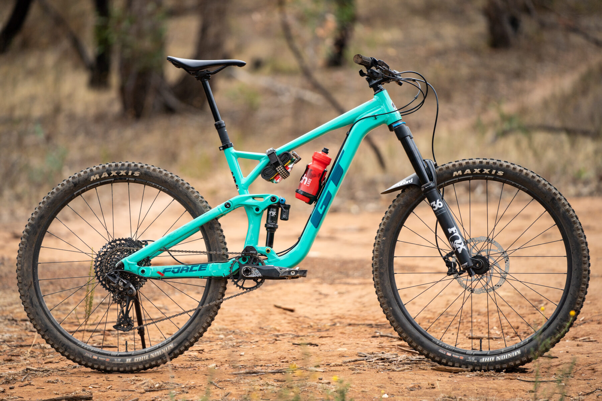

Эндуро, трейл и олл-маунтин — схожие дисциплины катания, нечто среднее между кросс-кантри и даунхиллом. Крутые каменистые спуски, подъемы, небольшие и средние прыжки. Несмотря на большую схожесть, трейл, олл-маунтин и эндуро всё же различаются. Эндуро — это всегда соревнования(гонка), этот термин пришёл из мото спорта, он подразумевает под собой езду на выносливость по сильнопересечённой местности, но время замеряется только на спусках и эти спуски вполне себе даунхильные, а подъёмы могут занимать всего 10-15% от общей дистанции. Олл-маунтин — то же эндуро, только без секундомера. А трейл — то же олл-маунтин, но более лёгкое.
Пример велосипеда для данной дисциплины:

Особенности велосипеда:
- Подвеска: 150мм - 170мм
- Колёса: 29 или 27,5 дюймов
- Вилалка: мягкая с ходом 150мм - 170мм
- Трансмиссия: задняя кассета больше чем в даунхиле (самая большоя звезда - до 50-ти зубьев, чтобы было легче вкручивать в гору)
- Тормоз: и задний и передний.
- Седло: с телескопическим подсидельным штырём(чтобы быстро менять высоту седла)